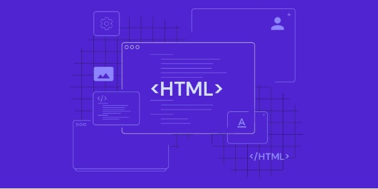

Aprenda HTML do Básico
Mai 06, 2024
 O Que é HTML:
A Linguagem de Marcação de Hipertexto (HTML) é uma linguagem de computador que compõe a maior parte das páginas da internet e dos aplicativos online.
O HTML não é considerado uma linguagem de programação, já que ele não pode criar funcionalidades dinâmicas.
Confira abaixo alguns dos usos mais comuns para o HTML:Desenvolvimento Web
Os desenvolvedores usam códigos HTML para projetar como um navegador vai exibir os elementos das páginas, como textos, hiperlinks e arquivos de mídia.
Navegação na internet
Os usuários podem navegar facilmente e inserir links entre páginas e sites relacionados, já que o HTML é amplamente usado para incorporar hiperlinks.
Documentação
O HTML torna possível a organização e a formatação de documentos, de maneira similar ao Microsoft Word.
Também vale notar que o HTML agora é considerado um padrão oficial da internet. O World Wide Web Consortium (W3C) mantêm e desenvolve especificações do HTML, além de providenciar atualizações regulares.
Este artigo vai cobrir o básico sobre HTML, incluindo como ele funciona, seus prós e contras — além de como ele se relaciona com CSS e JavaScript.. Baixe o guia de recursos do HTML